Understanding Generative Models for Real-World Sensor Time Series
The first open, large-scale study of sensor-signal generation — 14 settings across 4 domains, 7 datasets, and 12 modalities, evaluating 5 model families under one unified protocol.
Why SensorGen
Generative modeling of sensor signals has been fragmented across modalities, datasets, and task formulations, with each method tuned to a single signal type. SensorGen consolidates this landscape into one platform — shared data processing, task construction, training, and evaluation — so that model families, signal properties, and design choices can finally be compared apples-to-apples.
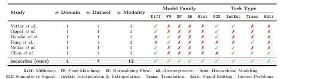
MIMIC-IV ECG — clinical 12-lead electrocardiograms paired with diagnostic reports.
CAPTURE-24, PPG-DaLiA, Metabonet — free-living accelerometry, wearable physiology, and longitudinal metabolic traces.
PhyMER, SHHS — controlled affective-state recordings and overnight polysomnography (EEG, ECG, EMG, EOG).
VitalDB — intra-operative waveforms, medication records, arterial blood pressure, PPG, ECG, and NIBP.
Click an icon to see where each modality appears.
These settings are organized into 4 task categories and 14 concrete settings. See the task design →
Task Design
We cast every task as conditional generation x̂ ∼ pθ(x | C), C ⊆ {c1, c2}, where c1 is a semantic condition (text, labels, metadata) and c2 is observed signal context (history, source channels). Each setting is built from a real sensing bottleneck and validated for clinical grounding, application value, and generative suitability.
Generate realistic, semantically consistent signals from text, labels, or metadata.
Predict future segments or reconstruct missing spans from observed temporal context.
Generate missing or hard-to-acquire target channels from accessible source channels.
Restore, refine, or selectively modify recordings while preserving non-target attributes.
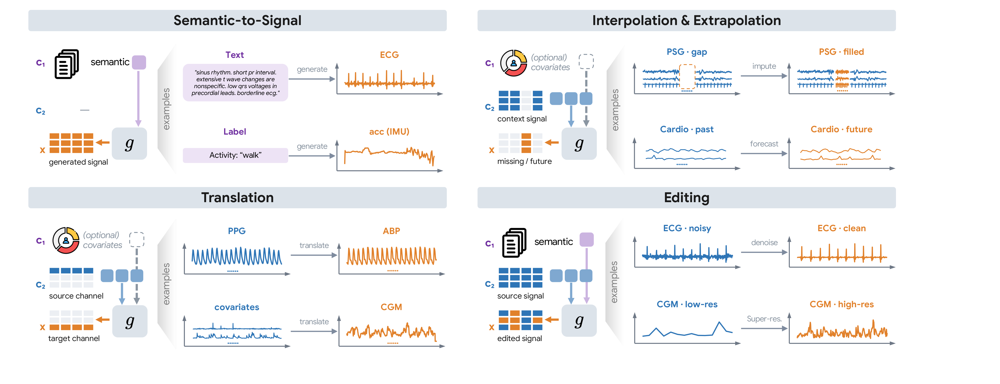
Bars are sized by the number of available samples. Click a category to see its settings.
What the Study Reveals
Rather than crowning a single best model, SensorGen turns a fragmented field into evidence. Each takeaway below is grounded in the benchmark and paired with the table or figure that supports it — practical lessons for building and evaluating sensor generators.
Across all four categories, SiT (flow matching) gives the best aggregate performance — best precision/recall on semantic-to-signal, and best MSE/MAE/PSNR/SMSE/SSIM on translation and interpolation/extrapolation. No single method wins everywhere, but flow matching is the reliable baseline for heterogeneous sensor generation.
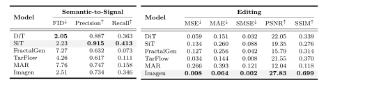
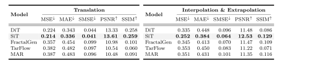
Quality degrades as sequences grow for semantic-to-signal and translation, but stays stable for imputation: surrounding observed segments anchor the missing region, so generation is far more tractable when target-signal context is available.
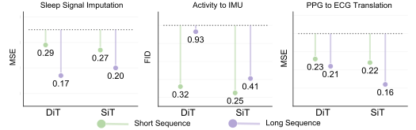
For high-frequency signals such as EEG, models reach high precision but low recall — plausible waveforms that miss spectral variability. Adding an STFT spectrogram as a time-frequency conditioning signal improves high-frequency channel fidelity.
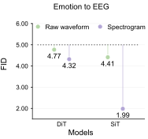
Raw demographic attributes hurt longitudinal glucose generation (overfitting), but dataset-level normalization flips them into a useful global context that beats the no-demographic baseline. Subject metadata helps only when encoded in a properly normalized form.
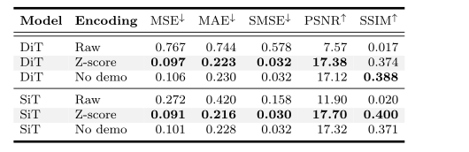
z-score normalization can bias generation (e.g., upward-shifted targets in blood-pressure translation). Range-based [−1, 1] min-max normalization consistently improves quality across models — sensor generation may need different normalization than sensor representation learning.
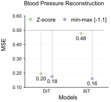
ECGs from a text-to-ECG generator improve both ECG-text pre-training transfer and supervised disease classification under data scarcity. Moderate augmentation (~10%) helps most; excessive synthetic data can amplify generator artifacts.
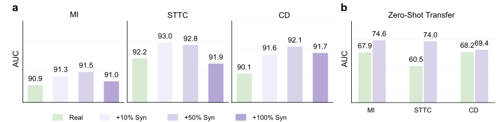
On text-to-ECG, FID decreases consistently with more training steps, and larger models improve fidelity further — sensor generation benefits from both compute and capacity scaling.
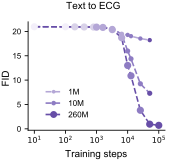
Across settings, samples capture recognizable signal structure rather than degenerating into noise.
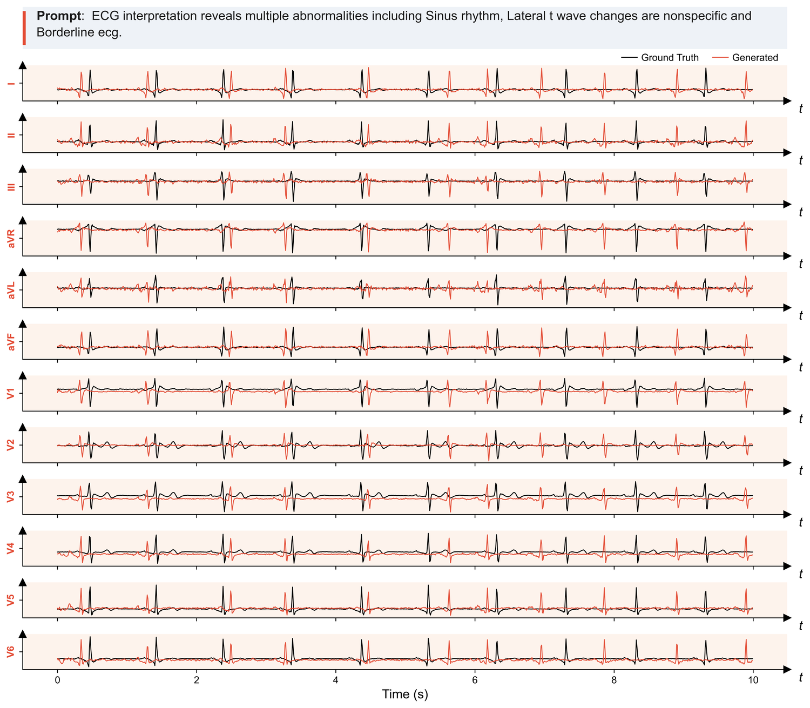
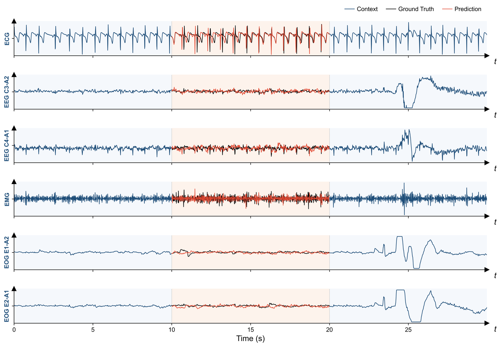
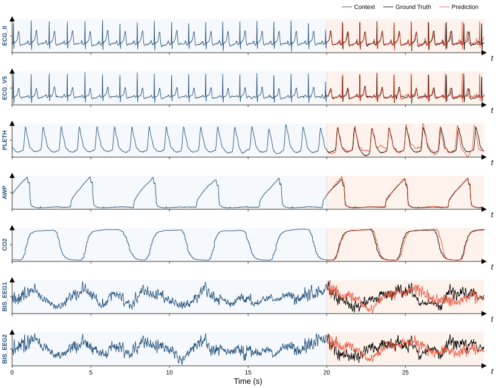
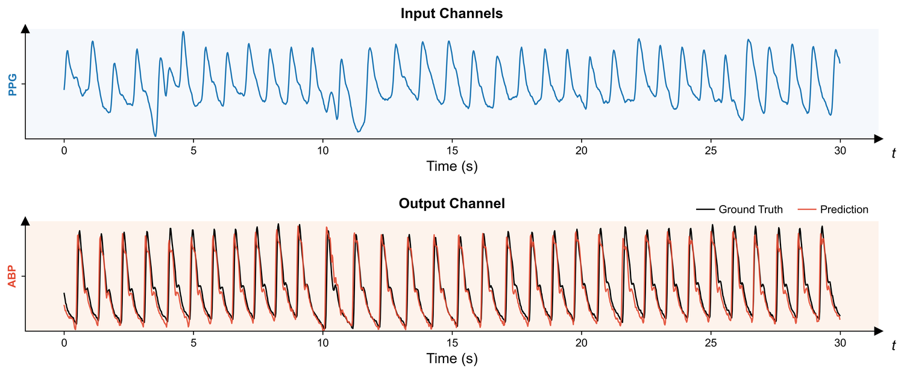
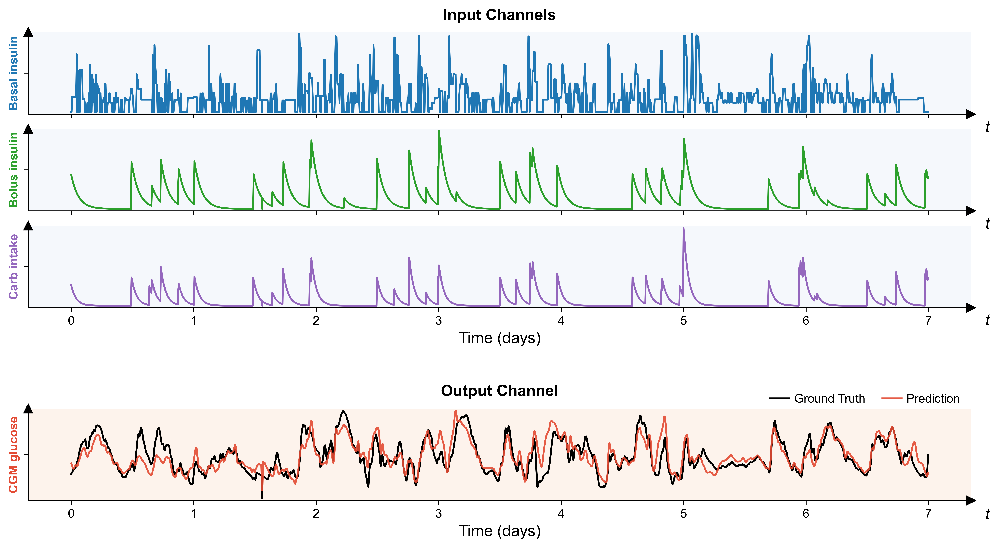
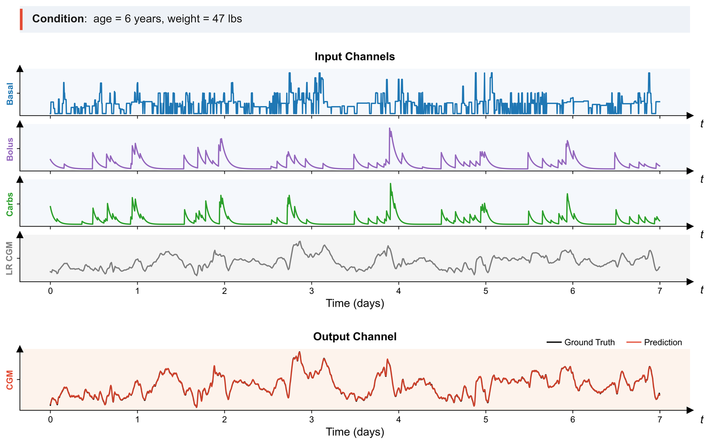
Iterative denoising — DiT.
Continuous transport — SiT.
Sequential tokens — MAR.
Invertible likelihood — TarFlow.
Coarse-to-fine — FractalGen & Imagen.
Shared tasks, splits, and metrics for every model.
Open & Reproducible
SensorGen ships standardized tasks, training pipelines, and pretrained checkpoints so you can reproduce results or build on them directly.
arXiv:2607.04245
Tasks, training & evaluation
SensorGen-SiT checkpoints
Dataset access guide
Citation
@article{shuai2026sensorgen,
title = {Signal or Noise? Understanding Generative Models for Real-World Sensor Time Series},
author = {Shuai, Zitao and Xu, Zongzhe and Wu, Yuntian and Li, Sirui and Li, Tianhong and Yang, Yuzhe},
journal = {arXiv preprint arXiv:2607.04245},
year = {2026}
}